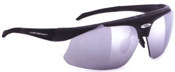
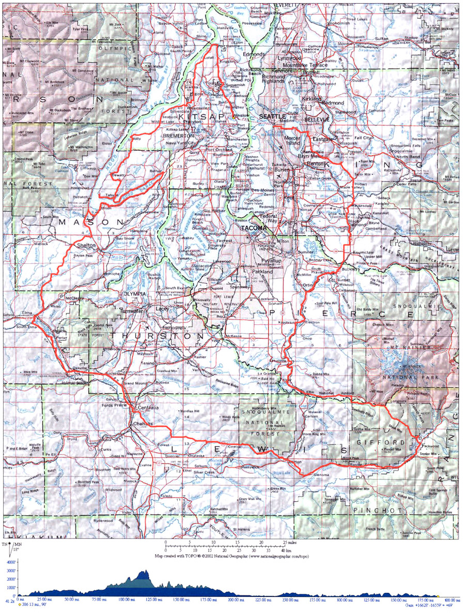
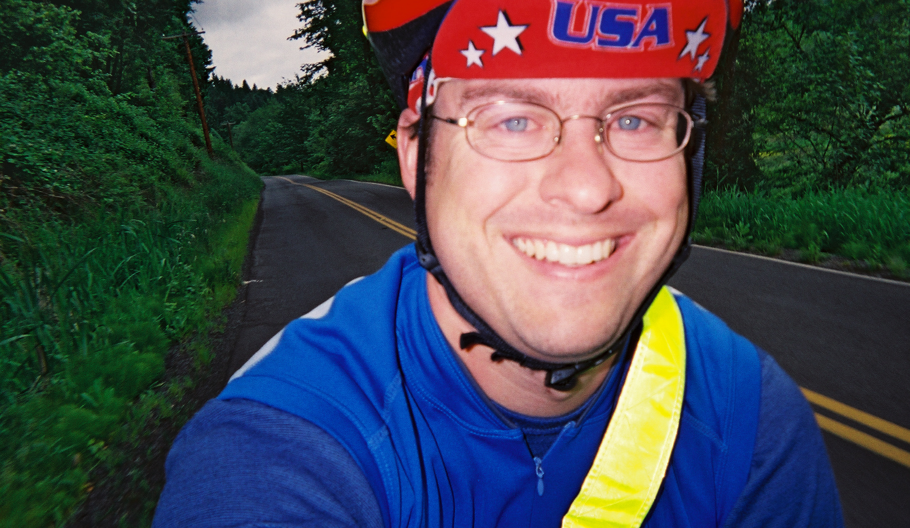
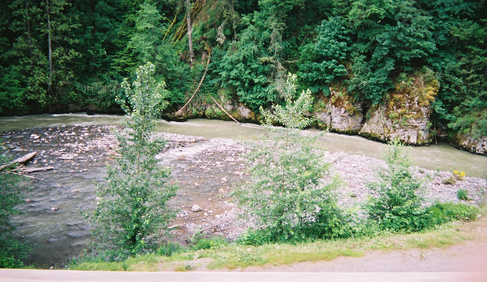
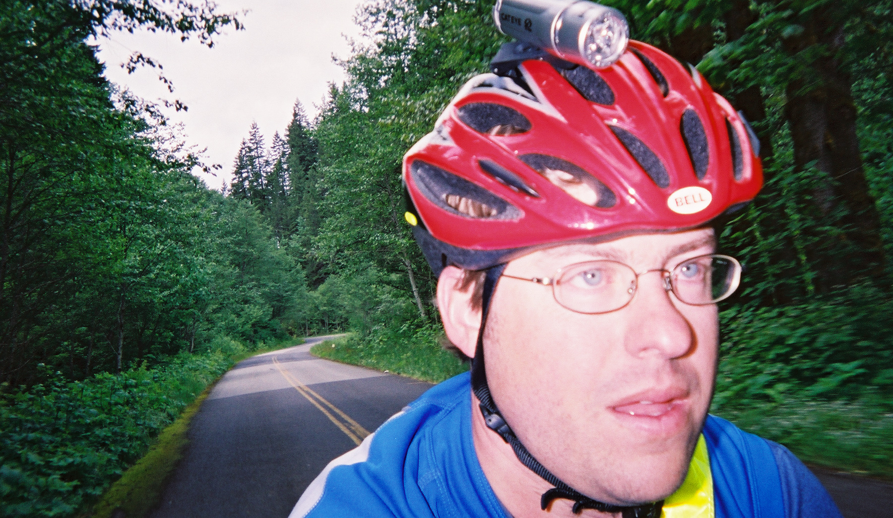
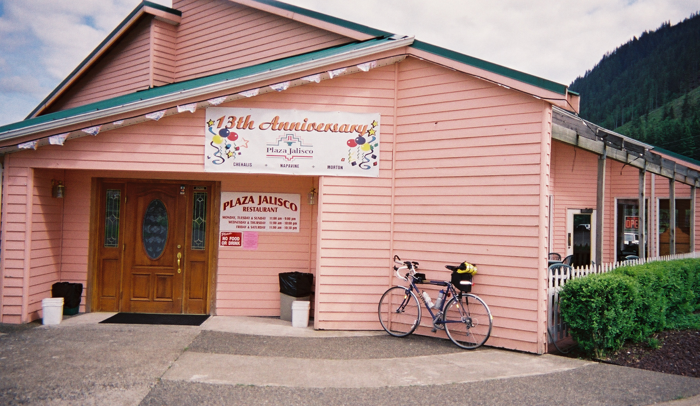
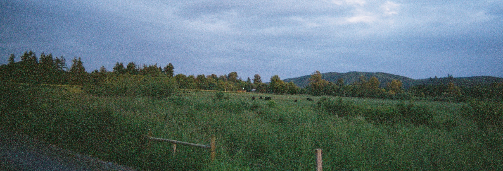
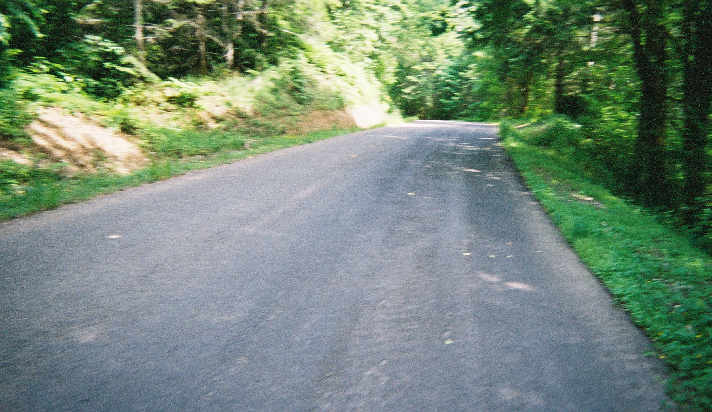

<!DOCTYPE HTML PUBLIC "-//W3C//DTD HTML 4.0 Transitional//EN"
			"http://www.w3.org/TR/REC-html40/loose.dtd">
<html>
<head>
	<title>SIR Newsletter - June 2005</title>

	<meta name="keywords" content="Randonneuring,Randonneur,Randonne,brevet,Long Distance Cycling,Cycling,Bicycling,endurance cycling,washington">


</head>
<body text="#003366" link="#336699" alink="#006699" vlink="#6699CC" bgcolor="#000066" topmargin="0">
<a name="top"</a>
<font face="arial,geneva,helvetica">

<table border="0" width="100%" cellspacing="1" cellpadding="4" align="center">
	<tr>
	<td colspan="4" align="center" valign="top" bgcolor="#6699CC"><a href="../../../newsletters.html"></a><font size="+4" color="#CC0000"><b>RIDES AGAIN</b></font><br>
<font size="2" color="#000000" face="arial,geneva,helvetica">Volume 10 Issue 3 - June 2005</font>
</td>
	</tr>

	<!-- SITE NAV -->

<tr>
	<td align="center" valign="middle" colspan="4" bgcolor="CCCCCC"><font size="2" face="arial,geneva,helvetica"><A HREF="../../../newsletters.html">NEWSLETTERS</a> - <a href="../../../rides.html">RIDES/BREVETS/PERMANENTS</a> - <a href="../../../member.html">MEMBERSHIP</a> - <a href="../../../info.html">GENERAL INFO</a> - <a href="../../../gallery.html">PHOTO GALLERY</a> - <a href="../../../links.html">LINKS</a> - <a href="../../../index.html">HOME</a></font>
</td>
	</tr>

<!-- TOC START -->

<tr>
		<td valign="top" colspan="2" bgcolor="ffffff"><font face="arial,geneva,helvetica">
<b>In This Issue</b><br>
<br>
Ride Summary: <a href="#1">Spring 400k</a><br>
Ride Summary: <a href="#2">Spring 600k</a><br>
Ride Report: <a href="#3">Spring 300k</a><br>
Ride Report: <a href="#4">Spring 400k</a><br>
Product Review: <a href="#5">Rudy Project RB3 Sunglasses</a><br>
Ride Report: <a href="#6">Spring 600k</a><br>
<p>
<b>NOTE:</b> Please send any content for the newsletter to <a href="mailto:anothergray@hotmail.com">Patrick Gray</a>
</td>
	<td valign="top" colspan="2" bgcolor="ffffff"><font face="arial,geneva,helvetica">
<b>Announcements</b>
<p>
<ul type="square">
<li>Congratulations to the following SIR members who completed the full Spring brevet series:
<p>
Darrin Adams, Peter Beeson, Rick Blacker, Ken Carter, Rick Haight, Don Harkleroad, David Huelsbeck, James Jensen, David Johnson, Paul Johnson, John Kramer, Ken Krichman, Les Lescosky, Brian List, Ray McFall, Wayne Methner, Fred Mulder, Brian Ohlemeier, Pete Rankin, Dave Read, Mike Richeson, Mark Roehrig, Mark Thomas, Eric Vigoren, Duane Wright and Terry Zmrhal.<p>
If anyone filled out their series with brevets put on by other clubs, send Patrick Gray a note.</li>

<li>The Cascade 1200 is almost upon us. Contact <a href="mailto:mark@muthomas.net">Mark Thomas</a> if you'd like to volunteer or simply go to the <a href="http://www.cascade1200.com/">Cascade 1200</a> website for more information.</li>

<li>The summer brevet season kicks off July 9th with a 100k Populaire.</li>
</ul>
</td></tr>

<!-- TOC END -->

<!-- ARTICLE 1 START -->

	<tr>

		<td valign="top" align="left" colspan="4" bgcolor="ffffff"><font face="arial,geneva,helvetica">
<a name="1"><b>Ride Summary: Spring 400k</b></a><br>
<i><small>Jan Heine</small></i><p>
<blockquote>
Sorry to have missed it - it sounds like the 400 km brevet was a success, minus a few angry dogs and motorists.<p>

51 starters (including 4 pre-riders) <br>
47 finishers (including 4 pre-riders)<br>
4 DNF <p>

One rider may have had a cup of coffee or a Big Gulp thrown at him from a vehicle on SR-241. A short time later, someone stopped on the shoulder just ahead of him, got out of the car and seemed to be waiting for the rider's approach. The driver got in and left when some other traffic came by before the rider got there. The rider subsequently dropped out of the ride. <p>

Organizer David Huelsbeck reports: <br>
<blockquote><font color="#698b69">
The consensus seemed to be that it was challenging and the numbers seem to reflect that. Most people found it scenic and seemed to enjoy the novelty of riding some new roads. (Not many had done either of the last two 1000km's.) There were mixed feelings about the neutral rollout. Except for a couple of people that had ridden SR-823 bridge crossing, almost everyone complained about the Yakima Greenway Trail, including me. <p>

The various wildlife sightings included a stray bison, locusts, gnats, skunks, a porcupine, a "cat," some deer, and quite a few aggressive dogs. In one case a dog chased a group into the territory of a neighboring dog and the intruder was taken down on the run by the incumbent to the delight of the riders. <p>

There should be a good story or two out of the Gruppeto. Bill Dussler brought home four other riders in a time of 26:10.</font>
</blockquote>
<p>

<font face="arial,helvetica,geneva"><a href="#top">Back to Top</a></font></td></tr>

<!-- ARTICLE 1 END -->

<!-- ARTICLE 2 START -->

	<tr>
		<td valign="top" align="left" colspan="4" bgcolor="ffffff"><font face="arial,geneva,helvetica">
<a name="2"><b>Ride Summary: Spring 600k</b></a><br>
<i><small>Jan Heine</small></i>

<blockquote>

<P ALIGN="left">

Owen Richards and Mike Richeson organized what must have been one of the toughest 600 km brevets in SIR history. They even managed to persuade the weather gods to send headwinds for about 250 km of the course. Only the anticipated rain remained sporadic. You can't have it all! But you can have 16,500 ft of climbing on a 613 km ride where at least 200 km are almost as flat as a pancake. <p>

However, SIR riders are getting tougher, too, so the DNF rate was low... Or maybe it was the fact that the most difficult hills were so far into the ride that most riders could smell the finish already. <p>

43 starters (including 4 on pre-ride) <br>
37 finishers (including 2 on pre-ride) <br>
6 DNF (including 2 on pre-ride, due to knee problems, time limit) <p>

No accidents or incidents. No records broken, either, as far as I know. <p>

Great support was lent by Melinda Morrow and Trent Hill (who restored riders' spirits at the Elma control), Mike Richeson (Tahuya, who did not seem to mind being awoken on the stroke of midnight by a ghostly rider) and Lorene & Bill Gobie (who transported riders' copious drop bag luggage). Thanks to all of them and to Owen and Mike for organizing a memorable ride.


<p>

<font face="arial,helvetica,geneva"><a href="#top">Back to Top</a></font></font></td></tr>
</blockquote>
<!-- ARTICLE 2 END -->

<!-- ARTICLE 3 START -->

	<tr>
		<td valign="top" align="left" colspan="4" bgcolor="ffffff"><font face="arial,geneva,helvetica">
<a name="3"><b>Ride Report: Spring 300k</b></a><br>
<i><small>Duane Wright</small></i>

<blockquote>
<P ALIGN="left">
The SIR spring 300k took place on Saturday, April 9, 2005. The pre-ride took place on the previous Saturday and included nine riders. Several others had threatened to participate in the pre-ride, and such a large number had us referring to the April 9 event as the "post ride."<p>

The route was influenced by the RAPSody (a multi-club sponsored ride that had debuted in 2004), the 2004 Northwest Tandem Rally, several of the Olympia brevets, and the ever popular SIR Tahuya - Seabeck 300k. It was thought that the Tacoma start would be a location slightly further away than usual, but fairly accessible due to the start line's proximity to I-5.<p>

The parking garage, at the Tacoma Dome Transit Center provided a dry location for staging the start of the event. Near the end of the actual event a Pierce County Sheriff's deputy informed several volunteers that a permit is required. But, the officer was very easy going and said he was just referring to "next time."<p>

The route is rather diverse, starting out in the urban area of Tacoma. Then it passes along the western shore of Puget Sound, to the picturesque hamlet of Steilacoom. The next segment is through Fort Lewis. Next comes a short stretch on I-5. Then the course is on Yelm Highway. Next comes the controversial part of the course - the Chehalis & Western Multi-Use Trail. The controversy was mostly due to the very tight gates at the intersections. On the pre-ride there was one altercation (gate still standing; bike on ground; rider fortunately o.k.). The actual ride had two riders colliding at speed with a middle-of-the-trail post. Both had to abandon (and one bike was seriously damaged). Hopefully Greg Cox won't figure out who was responsible for this course or I'll never again be welcome at the spring 200k post-ride dinner.<p>

Just in time for the pre-ride, the western extension of the Yelm - Tenino Multi-Use Trail had been nearly completed, so last minute changes to the route added even more trail miles. Although this trail is also under the auspices of the Thurston County Parks Department, it does not have the same tight gates. Perhaps the planners responded to negative feedback.<p>

I have mixed feelings about having a portion of a brevet route on a mixed-use trail, mostly due to the possibility of collisions with stationary obstacles at intersections. That being said, I enjoyed taking the trail, on the return from Orting, on the SIR spring 200k this season. And on our 2005 Fleche Northwest ride, I revisited the Chehalis & Western Trail. Another team used the newly extended Centennial Trail, between Snohomish and Arlington.<p>

After Tenino the route took SR-507 to Centralia (and food!). Then it followed old Highway 99 to the north. The route visited the towns of Rochester and Little Rock, before reaching the Blue Heron Bakery at Mud Bay (west Olympia). Although the actual ride was dry, for the pre-ride the bakery was the end of the dry road. Heavy showers accompanied the pre-ride group on the large rollers of U.S. Highway 101.<p>

At Hoodsport the riders stopped at the Union 76 station. Then the route doubled back to the intersection with SR-106. From here it followed the southern edge of Hood Canal. A not-too-secret control, at Twanoh State Park, provided sustenance as well as encouragement for the last 40 miles.<p>

Near Belfair the route briefly picked up SR-303. At this point lovers of hills were given a few to sink their teeth into. Eventually the route picked up the Key Peninsula Highway. At Purdy the route went onto SR-16. This is a busy, high speed freeway, though with a wide shoulder. After a few miles of this (including a couple of noteworthy climbs), cyclists exited and picked up the Cushman Multi-Use Trail. Just before sundown I placed a blinky at the entrance to the trail but it was stolen fairly quickly.<p>

Shortly after exiting the trail navigation became difficult (at least after dark) because an important line from the cue sheet was lost on the cutting room floor. Several riders used very creative portages to get to the Tacoma Narrows Bridge!<p>

The blinky at the start of the brief trail through the construction zone was fortunately NOT stolen.  The bridge itself was swept, several hours before the arrival of Jan Heine and Chris Ragsdale. The sweeping was an amusing event. I walked across the bridge with a large plastic bag, filling it with debris. I also lugged a heavy muffler about  of a mile, placing it safely out of harm's way, near one of the columns. I also carried a broom to brush several areas clear of broken glass. The weekend before I had walked a portion of the Cushman Trail, also carrying a broom.<p>

After the bridge the route was surprisingly quiet, passing by the University of Puget Sound, through the Proctor Neighborhood, and the North Slope Neighborhood, before descending steeply on 21st Street to downtown Tacoma and the finish.<p>

David Huelsbeck led the first ever SIR <a href="http://www.seattlerandonneur.org/newsletters/2005/may/index.html#5">gruppeto </a>(after also participating in the pre-ride!). Two riders, Bill Gobie, and Michael Rasmussen, comprised the gruppeto.<p>

David provides some interesting stats on the ride (numbers include pre-ride):<br>
<blockquote><font color="#698b69">
Starters 63<br>
Finishers 58<br>
Lost 2 in a crash; the tandem behind the gruppeto started late and had at least one mechanical. Another rider dropped out at about the 100 mile mark due to a sore knee.<p>

min     11:48 (Jan & Chris)<br>
max     18:52 (my gruppeto)<br>
average 14:44 (45 minutes less than typical 15:30)<br>
median  14:23 (gruppeto skewed the average)<br>
standard deviation  1:55<br>

A surprisingly normal distribution.<br>
5       DNF<br>
3       >2sd<br>
10      with in+2sd<br>
12      with in+1sd<br>
25      with in-1sd<br>
8       with in-2sd<br>
0       <2sd<p>
</blockquote></font>

Many riders evaluated the course as being the flattest 300k they had ridden, although Eric Vigoren's altimeter listed 7,200 feet of climbing. The tandem team of Patti and Dan Austad DNF'd at approximately 301 km, which is probably some sort of record.
<p>

<font face="arial,helvetica,geneva"><a href="#top">Back to Top</a></font></font></td></tr>
</blockquote>

<!-- ARTICLE 3 END -->

<!-- ARTICLE 4 START -->

	<tr>
		<td valign="top" align="left" colspan="4" bgcolor="ffffff"><font face="arial,geneva,helvetica">
<a name="4"><b>Ride Report: Spring 400k</b></a><br>
<i><small>Mystery Contributor</small></i>

<blockquote>
<P ALIGN="left">

Well the 400k was a great ride. Blewett Pass was 34 degrees at the top, but Matawa was hitting 80 degrees! We started the ride at 5:45 AM with a 10-15 mph headwind and then the road tilted up as we attacked Blewett Pass. Average speed for the first 28 miles was a blistering 10 mph! But the downhill was fabulous except for the wind-chill of about 0 degrees F. But it sure picked up the average speed!<p>

Then about 120 miles into the ride there is a hill that wound its way up through the Rattlesnake Hills. The road disappeared around a bend and when you got to the bend you could see another couple of miles that it still tilted up at about 6 to 8% grade. It continued to do this for several bends.<p>

In Sunnyside, we turned onto Independence Road, lurking around many of the houses were bicycle chasing dogs. One of which decided that my calf might be a tender kibble. I out sprinted him, but the next one got really close. So close that I pulled my foot out of the cleat. The dog would not stop, so he got a cleated shoe in the mouth. I don't think that that dog will chase a bicycle for awhile. They should rename that road Independence Dog Run :-) <p>

Down by Yakima we were routed onto a bicycle trail that was difficult to find and by this time it was very dark. The trail had no lights at all with a nice steep drop into the Yakima River. Then the highlight of the trip was the Ellensburg Canyon Road. Dark, with not a house or street light around. I was riding with a group of seven guys and the only light was from all the headlights and blinky lights of the bicycles. Several times someone would pipe up a comment like "Will this canyon ever end?" or "Have we entered a black hole?" It was enough to break the psychological melancholy that the darkness brought on. The canyon is about 30 miles long and we were back into a headwind with some rollers to add to the blissfulness of the ride. <p>

The lights of Ellensburg at 1:30 in the morning were the most spectacular sight I have ever seen! (I don't get out much.) All in all a very fun ride.... well for someone insane it was a fun ride. <p>

Stats:<br>
Total Miles 262<br>
Elevation Gain 10,698 feet<br>

<p>

<font face="arial,helvetica,geneva"><a href="#top">Back to Top</a></font></font></td></tr>
</blockquote>

<!-- ARTICLE 4 END -->

<!-- ARTICLE 5 START -->
	<tr>
		<td valign="top" align="left" colspan="4" bgcolor="ffffff"><font face="arial,geneva,helvetica">
<a name="5"><b>Product Review: Rudy Project RB3 Sunglasses</b></a><br>
<i><small>Terry Zmrhal</small></i>

<blockquote>
<P ALIGN="left">

For most of my life, I've been wearing glasses. This seems to create many unusual problems when trying to get prescription eyewear for various sports - swimming, racquetball, cycling - and even just finding sunglasses. This is especially true if you have a strong prescription. For cycling there are a number of options for protecting your eyes if you need glasses: you can use contacts and regular sunglasses, regular glasses with clip-ons, light-sensitive tinting lenses, and the various prescription sport shields from Bolle, Smith, and others. I've tried many with limited success. The latest one I've tried is the RB3 glasses from Rudy Project. These looked like they would have great promise and are proving themselves so far. <p>

The RB3 is one of three pairs of sunglasses/sport shields from Rudy Project with a prescription insert, changeable lenses, and flip-up sport shield. The other two are the Perception and Exception, both of which are more costly. The prescription insert is obviously critical for those that need a prescription. The changeable lenses aren't a necessity, but are certainly nice to accommodate varying light and weather conditions. The coverage of the sportshield style lens is quite nice for preventing much of the air rush from riding from reaching my eyes.<p>

<table border="0" width="300" cellspacing="0" cellpadding="4" align="right">
	<tr>
		<td></td>
	</tr>
	<tr><td><b><align="left">Rudy Project RB3's<br>
</table>

The flip-up design is what sells the glasses! The biggest problem with other systems is that there are four lens surfaces (front and back of prescription lens, front and back of sport shield), and the inner surfaces often get fogged up when you stop or get hot climbing on cold days. The only way to clear the lenses is to stop, take out the prescription insert and clean it off. Here's the beauty of the flip-up - just flip up the sport shield lens and the fog clears. Once you get going again, flip the lens back down and youre good to go again. I've used this technique commuting as well; when I reach a stoplight the glasses will start to fog up at which point I flip up the lens and the fog clears. Once I get going again, I just flip the lens back down. The other problem is walking into a store after being out in the sun and suddenly you can't take off the sunglasses because otherwise you 
can't see anything clearly. With the flip-up design, you can flip up the lens when you walk in a store no problem!<p>

I've tried two lens colors - yellow and racing red. The yellow works quite well for night riding, rain and low light conditions, as well as clear days. When the sun is really shining I'd prefer something a little darker, but it does take the edge off. I particularly like the yellow lens at night where the bright white lights of cars and street lights turn to yellow. The racing red is great for clear sunny days and works fairly well with medium to low light; it's just too dark at night though. There are six other lens colors as well.<p>

To further show its versatility, you can wear the glasses with sportshield and prescription insert, with just the sportshield and no prescription insert, or just the prescription insert and no sportshield. It's a reasonably nice looking set of glasses with just the prescription insert as well and thus can serve as a backup pair for those that do wear glasses. <p>

Thus far I've raved about the glasses, so are there any downsides? Not really, ok well maybe the cost by the time you get sunglasses, insert, prescription lens, and the set of colored lens you want. I think this pair is worth it though. My only other complaint would be that the frames are a bit tight when I'm wearing ear covers or an ear band. Otherwise I'm very happy with them! <p>

The glasses retail for $160, additional lenses are $40 to $50 each and the prescription insert is $50. You can get full product information at <a href="http://www.rudyprojectusa.com/products/sunglasses/styles/rb3.htm">Rudy Project</a>. Conveniently Sammamish Valley Cycle sells Rudy Project as well! <p>

<font face="arial,helvetica,geneva"><a href="#top">Back to Top</a></font></font></td></tr>
</blockquote>

<!-- ARTICLE 5 END -->
<!-- ARTICLE 6 START -->

	<tr>
		<td valign="top" align="left" colspan="4" bgcolor="ffffff"><font face="arial,geneva,helvetica">
<a name="6"><b>Ride Report: Spring 600k - or, Things I Understand Now</b></a><br>
<i><small>Patrick Gray</small></i>

<blockquote>
<P ALIGN="left">

<table border="0" width="300" cellspacing="0" cellpadding="4" align="right">
	<tr>
		<td></td>
	</tr>
	<tr><td><b>The Map of the Route<br>
</table>

The weekend of June 4-5 I rode the Seattle Randonneurs' 600k. It was a leap in distance for me from the 300k, I was facing the prospect of serious distance, darkness, sleepiness and something called The Tahuya Hills.<p>

As part of my ride preparation I made notations on the cue sheet of when I thought I might hit each control. According to my math I could reach the overnight stop in Elma at 23:30, which would allow me to get four or five hours of sleep. And I knew I wanted to get some sleep. My calculations were based on a fairly consistent average speed of 12.8mph (including stops) on centuries, the 200k and the 300k. This would also be my first brevet on my new bike, a used, eight-year-old Novara Randonee touring bike. I'd done a couple of centuries since I bought the bike back in April, but this would be the true acid test.<p>

Like a real randonneur, I rode my bike to the start (six miles away!) in downtown Seattle. Despite the short ride in, I gave myself plenty of time in case the Ballard Bridge was up or a slow train was blocking access to the ride start point. Owen Richards, one of the ride organizers got everyone signed in and collected a massive pile of drop bags. I felt a bit like a cheater when I packed up my courier bag with a spare set of cycling clothes, bathroom kit and miscellaneous bike maintenance stuff, but I was astonished to see the size of some of the duffel bags plunked on the pavement. I think a few guys must have packed replacement bikes. <p>

The ride began at 5am and I started out briskly with the 40 or so other riders taking part. The group stayed fairly close together through Pioneer Square, the International District and onto the I-90 bridge to Mercer Island. By then there were two or three main groups developing and I thought I'd head up a bit to the group ahead of me. After riding somewhat conservatively on the 200k and 300k I decided I'd allow myself to push the pace a little bit on this 600k to try to maximize my sleep time at the overnight stop. <p>

<table border="0" width="300" cellspacing="0" cellpadding="4" align="left">
	<tr>
		<td></td>
	</tr>
	<tr><td><b>Happily Cruising Along<br></b>
	<small>Photo: Patrick Gray</td></tr>
</table>

I was 30 minutes ahead of my intended schedule at the first control in Buckley (48.7 miles). Sadly, Bryan Adams "Run to You" from his 1984 Reckless album got jammed in my head as it was playing at the gas station control. Later I would find myself wishing for more Bryan Adams after "Run to You" was supplanted by the theme song from "America's Funniest Home Videos." Why, Lord, do you torment me? Despite the lousy mental soundtrack I was feeling strong, kept on pushing the pace and reached the second control in Eatonville (78.8 miles) a full hour ahead of schedule. I was feeling a bit hungry and fueled up on a bean and cheese burrito, chocolate milk and an apple. Sadly, I promptly dropped my apple on the pavement outside the grocery store, but tucked it into my jersey knowing it would be tasty as I rode. <p>

Sometime before Eatonville, at around 60 miles, my Minoura Swing Grip light mount broke apart. Luckily, Mike Richeson's disparaging comments on the <a href="http://forums.bicycling.com/forum.jspa?forumID=16">Bicycling.com forum</a> about the Swing Grip had led me to link together the various pieces with some zip ties. They did their job and my lights were left dangling from a zip tie instead of smashing themselves on the pavement. Now I had additional motivation to minimize my night riding (I could put one light on the handlebar and I still had my helmet light, but this wouldn't be ideal). <p>

<table border="0" width="300" cellspacing="0" cellpadding="4" align="right">
	<tr>
		<td></td>
	</tr>
	<tr><td><b>Boulder Creek, I Think<br></b>
	<small>Photo: Patrick Gray</td></tr>
</table>

The route now headed upward towards Mt. Rainier on State Route 7. I hooked up with a Terry Z paceline briefly, but realized I'd burn out my legs at the speed they were going and after a couple of miles dropped off to toddle along at my own pace. The road continued upward on the quiet Route 52 through the deep woods south of Mt. Rainer. Chipseal. Chipseal makes you slow. Chipseal makes you crazy. This is the <b>First Thing I Understand Now</b>. I was slowing down. Slowing... Reaching for the granny geardespair. At last I reached the crest of this deceptive climb and had a nice downhill cruise towards Packwood. There were roughly 700 bikers out on their (mostly) Harleys and I thought back on the days when I too cruised these roads to the sound of thunder. Now I had only my breathing to listen to. <p>

<table border="0" width="300" cellspacing="0" cellpadding="4" align="right">
	<tr>
		<td></td>
	</tr>
	<tr><td><b>Uphill on Chipseal = no more smiling<br></b>
	<small>Photo: Patrick Gray</td></tr>
</table>

Rounding a corner on the descent I was surprised to see a pair of branches lying across the lane. Knowing these could wreck any group of riders behind me I stopped to sling them off the road. I can only assume they fell there from the overhanging trees above. All good downhills must end and soon enough I reached the control in Packwood (mile 124) at 13:35, about an hour and 15 minutes ahead of schedule. I grabbed some more food, sat down on a bench to eat, used the john and headed out fairly quickly. <p>

The <b>Second Thing I Understand Now</b> - headwind. Holy hell was there headwind. There's only one turn between here and the next control. It's a 33.6 mile stretch, flat, straight into the wind, straight road, fast traffic, a grind. I was delighted to be cranking out a whopping 10mph. If the road angled down I could get to 14mph. But mostly I hovered near 10. It was rough. I pondered whether it would be easier with five or six riders creating a draft for me. There was no one in sight ahead and no one in sight behind. So on I toiled. I began to crave real food and became obsessed with the thought of a big plate of rice and beans, some tortillas and a giant Coke. The thought grew in my head until it seemed the world would end if Morton didn't have a Mexican restaurant. It was all I could think about. <p>

<table border="0" width="300" cellspacing="0" cellpadding="4" align="right">
	<tr>
		<td></td>
	</tr>
	<tr><td><b>&iexcl;Plaza Jalisco!<br></b>
	<small>Photo: Patrick Gray</td></tr>
</table>

And then, Joy! Right at the turn into Morton sat the Plaza Jalisco Mexican Restaurant! I couldn't believe my good fortune. I stepped inside and asked if I could get rice, beans, tortillas and a Coke. The hostess convinced me to have a seat instead of taking the food to go (wise counsel).  I washed my face and hands and upon returning to the table commenced wolfing down the food. I know on any other day this wouldn't have tasted great, but at 16:30 with 158 miles behind me, it was delicious. There was a bit more food than I could handle, so I rolled up a spare tortilla and tucked it in my jersey pocket to dine on later. I got my card signed, paid, left and headed to the gas station across the way for more Gatorade. There was a collection of suckers (non-Mexican Restaurant dining randonneurs) huddled curbside, but none of them was swayed enough by my raving review to get their own Mexican meal. Perhaps I raved too much?<p>

I was back on the road and an hour ahead of schedule. The route was mercifully mostly flat with no more climbs anticipated. Soon enough I reached Centralia. (Could there be more potholes? No, this town has the maximum number of possible potholes.) I'd officially reached the 200-mile mark. It was 19:30, I was an hour and twenty minutes ahead of schedule and feeling great. This was my first double-century distance and I was happy to have done it in 14:30, considering my "usual" century speed is 7:15. While stopped at the control I remounted one of my lights from the failed Swing Grip onto the front of my Aerobar (where it would wiggle, jiggle and bounce erratically, but at least not fall off). Some other riders were pulling in and discussing a stop at McDonald's, the very though of which made me feel a little ill. Of course I still had my rolled up tortilla so as I pedaled out of town I 
munched on that and washed it down with Gatorade. About Gatorade - I decided to stick to the same flavor, or at least color, for this trip so I wouldn't have a sickening grey sludge in my bottle. This strategy seemed to work and I never lost my taste for the stuff at any point in the ride.<p>

<table border="0" width="300" cellspacing="0" cellpadding="4" align="center">
	<tr>
		<td></td>
	</tr>
	<tr><td><b>Cows at Sunset<br></b>
	<small>Photo: Patrick Gray</td></tr>
</table>

The final 33-mile stretch to the overnight stop in Elma seemed to drag and my body was protesting most of the way. The sun headed down, some light sprinkles fell for 10 minutes and I rolled along the flat, lightly-traveled farm roads. I tried with all my might to not constantly check my odometer, but the temptation was too strong. And with each glance down my despair grew at the number of miles remaining. At last I reached Elma and the Parkhurst Hotel. It was so nice to finally stop. I couldn't stand up straight because of lower back pain, but I hobbled inside to an enthusiastic greeting from some wonderful volunteer. Actually, she stepped out of the hotel room to sign my card and make sure I knew where I was going. <b>Thing I Understand Now Number Three</b> - on a ride of this distance I won't remember anyone's name, no matter how many times they tell me. (I've since learned the 
volunteers were named Trent Hill and Melinda Morrow. And I think the dog was named Chloe. It was nice to see a friendly dog after encountering several "out-sprint-me-or-die" mutts en route.) I was also having trouble forming ideas in my head, but managed to work through the fog to request a turkey sandwich and something carbonated but not caffeinated. I reached the hotel at 22:05 and was delighted to be an hour-and-a-half ahead of schedule with the option of sleeping six hours! The distance for the day was officially 233.9 miles.<p>

So here's <b>Thing I Understand Now Number Four</b> - it's really hard to think straight after a long day in the saddle. I struggled mightily to lay out my gear for Sunday morning, pack up the gear I'd no longer be using and figure out how the goddamn shower worked. By 22:45 I was flopped in bed, oblivious to my roommate stumbling around. I'd tell you his name, but refer to Thing I Understand Now Number Three. <p>

Sunday, 4:45am. A knock on the door woke me up (is it morning already?). My roomie had headed out sometime earlier. I popped out of bed, brushed my teeth (ahhh) and got into fresh biking clothes. I decided to wear two pairs of shorts since I was feeling a little tender. The two pairs felt a little odd at first, but I got used to them quickly enough. Paul Johnson was already up and eating some breakfast. He'd pulled in at 2am and we compared quick notes on the ride thus far. I slapped together a peanut butter sandwich, left my drop bag with the volunteers (Melinda and Chloe), grabbed a Coke and headed out at 5:05. It was a little chilly, so I tucked the cold can of Coke into my jersey pocket to drink after I was warmed up a bit.<p>

Dawn was breaking but I flipped on my lights for the first couple of hours, just to be sure I'd be seen. I was surprised to catch up with three other riders, including Ken Krichman, after about an hour. I'd assumed people were either crazy and would be gone long before me, never to be seen again, or the speed demons who had slept all night would cruise by me later in the day. I never thought I'd actually be catching people. But catch I did. With no traffic we rode four abreast for a little while until I moved ahead. It was still pretty cold. I was wearing a long-sleeve polypro top, a short-sleeve jersey, a think cycling cap and wool leg warmers. My rain shell, booties and tights were still rolled up behind me, but it never occurred to me to put themon. <p>

I reached the first control for the day in Potlatch at 7:17, a mere 15 minutes ahead of schedule (and I was feeling optimistic about an early finish). I grabbed a small cup of hot chocolate and what turned out to be a very stale maple bar. Now, a stale maple bar dipped in cocoa may just be the tastiest thing in the world. I drank the hot cocoa fast enough to burn my throat and clambered back on the bike. I felt like a new man thanks to the hot drink and sugary sweet and as I rolled out I was filled with enthusiasm and fast legs. At the control I'd seen five other riders and as I left Peter Beeson and Ken Carter were rolling in (these are the speed demons that slept all night). I'd also chatted briefly with a guy who told me he was prepping for STP this year. Maybe Ill see him out there. Some clever, and early-rising, kids had thoughtfully placed a thick branch across the road so again I stopped to remove it.<p>

<table border="0" width="300" cellspacing="0" cellpadding="4" align="center">
	<tr>
		<td></td>
	</tr>
	<tr><td><b>Hood Canal from Route 106<br></b>
	<small>Photo: Patrick Gray</td></tr>
</table>

The next stretch of road followed a familiar route from the 300k along the southern shore of Hood Canal. It was beautiful in the early morning with very little car traffic. The next control at the impressively named Port of Tahuya (I think there was a boat ramp) was manned by Mike Richeson, one of the ride organizers, and he had a nice spread of food available. I ate a cookie and finally popped open that Coke I'd started the day with. I'd been carrying it for 70 miles and I finally felt warm enough to drink it. Maybe I'm not so clever. At the control there were more riders and much talk about the upcoming Tahuya Hills. Now, years ago, I'd ridden a fully-loaded touring bike through this general neck of the woods and I figured these hills would be manageable. <p>

<table border="0" width="300" cellspacing="0" cellpadding="4" align="right">
	<tr>
		<td></td>
	</tr>
	<tr><td><b>This is a Tahuya hill. The picture fails to capture its spirit.<br></b>
	<small>Photo: Patrick Gray</td></tr>
</table>

<b>Thing I Understand Now Number Five</b> - there's a reason the Tahuya Hills get talked about in SIR circles. These mothers were steep. But it wasn't just that they were steep, it was that at the top of one there'd be another one. Or maybe you'd get a short descent to think, "That wasn't so bad," only to be greeted by another hill. Lord, if I was ahead of schedule at Potlatch, I sure as hell wasn't going to be ahead of schedule at whatever control I might find myself weeping in next. After roughly an eternity of hills, and seeing Peter and Ken (those bastards) zip up them ahead of me, I finally reached Seabeck. Somewhere along the way I passed my roommate from the night before, but my haze was too great for conversation. <p>

Finally, control #10 in Seabeck, mile 340 (107 for the day). It was 13:18. I was 15 minutes behind schedule. I bought one of my newfound favorite randonneuring snacks - Rice Krispy Treats - used the porta-potty and headed out. Ken and Peter had stopped for some sit down food and rolled out at the same time I did. I rode with them for a couple of miles after leaving the control, but they soon left me on the next set of hills. I forgot to plug my computer back in at the control, so now my odometer was 1.5 miles short of actual. This gave me plenty of chances to practice my failing math skills. Somewhere in here I should bring up <b>Thing I Understand Now Number Six</b>  - speed comes in the hills, if you want to be faster, do some hill work in your training, you lazy bum. Another thing about odometers, mine was getting ahead of the cue sheet for the entire ride, but it occurred to me that 
I could simply unplug it when the mileage matched whatever the next turn would be. Then, when I hit the turn I'd plug the thing back in. I don't know why I never figured this out on any of the earlier rides. But anyway, that's how it came to be unplugged in Seabeck and 1.5 miles short of the cue sheet - a gap that I wouldn't make up over the remaining distance.<p>

Now an aside about navigation - read through the entire cue sheet ahead of time to be certain the details are all there. I'd created mine from the HTML version on the SIR website, but in my fervor for perfect formatting I'd inadvertently cut off most of the text for two of the turns. The first one wasn't a big deal because it was a turn I knew from the 300k. The next was a little more serious because the sheet only said "afterwards." That one made me stop and think for awhile. I had two options - continue straight and up a hill, or turn right onto a flat road. It would require a half-mile leap of faith. I turned right and was happily correct. If the leap-of-faith distance had been any longer I might have just stood there waiting for someone else to come along.<p>

Just one more control to go before the finish. Port Gamble. Mile 363 (129 for the day). Blazing down a hill with a rough road surface something left my bike and I heard it hit the ground. I stopped, took stock of what I had, thought about things for awhile and decided it couldn't have been anything important (impaired judgment?). Twenty feet later I figured out it was my camera that was missing. So I turned back, retrieved the damn thing halfway back up the hill and headed on. Clearly the camera wouldn't be taking any more pictures, but I was hoping the shots already in the roll would turn out. I'd been riding near another guy at the time of the camera jettison but now he was far ahead. At last I reached Port Gamble. There was a large renaissance faire in town and I'm sure they all thought <i>we</i> were freaks. The time was 15:30 and I was a mere seven minutes behind schedule. <p>

I took a long time leaving Port Gamble. First I grabbed a hotdog, chips and a chocolate milk. Then I hemmed and hawed about putting my rain gear on (it was raining but didn't look serious). Finally I put on my jacket and booties. John (a randonneur from Portland and the only person whose name I managed to remember) and I rolled out and would do the final 20 miles together. Sure enough, the rain stopped after a couple of miles and we were both overheating. So we stopped to ditch the jackets and rolled on. After a few more vindictive hills we reached the bridge over Agate Pass. Tim Corkery had ridden over from Seattle to greet me and share the final few miles. It was nice to see a cyclist without a grim, dazed expression on his face. Luckily, Bainbridge Island is a geographic anomaly and the road is 95% downhill. I think we'd earned a little downhill stretch. <p>

We hit the Ferry dock at 17:27, just 27 minutes behind my intended schedule. Our timing was perfect and after getting cards signed and grabbing my drop bag, we rolled onto the boat. About six other riders (including Mark Thomas, Peter B. and Ken C.) were already on board so we had a nice ride across the Sound. I grabbed a pretzel, Snickers bar and a Coke to fuel me for the final stretch home. The bike had performed charmingly. The only physical aggravation I had was some serious lower back pain that kept me hunched over and ridiculous-looking at the end of each day. Well, that and my legs are a little sore. My total time was 36:27, including six hours of sleep. The distance was 381.4 miles. Plus I tacked on 12 miles getting to and from the start. <p>

A quick recap of the Things I Understand Now:<br>

1.	Chipseal. Chipseal makes you slow. Chipseal makes you crazy.<br>
2.	Headwind happens. Hunker down and get through it.<br>
3.	Amnesia. I won't remember anyone's name on a ride of this distance.<br>
4.	Mental Fatigue. It's hard to think straight after 17 hours of riding.<br>
5.	Tahuya. There's a reason people talk about these hills.<br>
6.	Speed. Speed comes in the hills.<p>

Eric Vigoren provided the following elevation numbers:<br>
3330 ft. at Buckley<br>
4497 ft. at Eatonville<br>
7098 ft. at Packwood<br>
7920 ft. at Morton<br>
9687 ft. at Centralia<br>
9970 ft. at Elma<br>
11790 ft. at Tahuya<br>
14460 ft. at Seabeck<br>
17241 ft. at Bainbridge
<p>
<font face="arial,helvetica,geneva"><a href="#top">Back to Top</a></font></font></td></tr>
</blockquote>


<!-- ARTICLE 6 END -->


<tr>

		<td valign="top" align="left" colspan="4" bgcolor="ffffff"><font face="arial,geneva,helvetica">
<a name="1"><b>2005 Upcoming SIR Brevets</b></a>
<p>
<table border="1" width="99%" cellspacing="0" cellpadding="2" align="center">
	<tr>
		<th width="10%">Date</th>
		<th width="20%">Distance</th>
		<th width="30%">Organizer</th>
		<th width="40%">Route</th>
	</tr>
	<tr>
		<td>June 25-27</td>
		<td><a href="rides/ride_archive/1000km/1000km_1_2005Desc.html">1000 km</a></td>
		<td>TERRY ZMRHAL, MARK THOMAS, PAUL JOHNSON</td>
		<td>Run concurrently with the <A HREF="http://www.cascade1200.com/">Cascade 1200 km</a>. Starts at the same time and place as the 1200 km and follows the first 775km of the route until Farmer where route continues west on US 2 until the finish in Monroe.</td>
	</tr>
	<tr>
		<td>June 25-27</td>
		<td><A HREF="http://www.cascade1200.com/">Cascade 1200 km</a></td>
		<td>TERRY ZMRHAL, MARK THOMAS, PAUL JOHNSON</td>
		<td>The inaugural 1200km!</td>
	</tr>
	<tr>
		<td>July 9</td>
		<td><xa href="rides/ride_archive/100km/100km_2_2005Desc.html">100 km Populaire</a></td>
		<td>PAUL JOHNSON</td>
		<td>In and around Olympia</td>
	</tr>
	<tr>
		<td>July 23</td>
		<td><xa href="rides/ride_archive/200km/200km_2_2005Desc.html">200 km</a></td>
		<td>DARRIN ADAMS, JAMES GUTHOLM, PEG WINCZEWSKI</td>
		<td>In and around Olympia</td>
	</tr>
</table>

<!-- SITE NAV -->

<tr>
	<td align="center" valign="middle" colspan="4" bgcolor="CCCCCC"><font size="2" face="arial,geneva,helvetica"><A HREF="../../../newsletters.html">NEWSLETTERS</a> - <a href="../../../rides.html">RIDES/BREVETS/PERMANENTS</a> - <a href="../../../member.html">MEMBERSHIP</a> - <a href="../../../info.html">GENERAL INFO</a> - <a href="../../../gallery.html">PHOTO GALLERY</a> - <a href="../../../links.html">LINKS</a> - <a href="../../../index.html">HOME</a></font>
</td>
	</tr>

	<tr>
		<td colspan="4" rowspan="1" align="center" bgcolor="#FFFFFF"><font face="arial,helvetica,geneva"><b>2005 SIR Executive Board:</b><br>

<font size="2">Paul Johnson, Peg Winczewski, Peter McKay, Amy Pieper, Mark Thomas, Terry Zmrhal, Jon Muellner, Greg Cox, Wayne Methner</font>
<p>
<b>Membership Fee:</b><br>
$10 - full membership w/e-mail newsletter or
$15 - full membership w/printed newsletter.</p>

<p align="CENTER"><b>Membership Address:</b><br>
c/o Terry Zmrhal<br>
9531 112th Ave NE<br>
Kirkland, WA 98033<br>
425-828-7818</font></td>
	</tr>

	<tr>
		<td colspan="4" rowspan="1" align="center" bgcolor="#000066"><font face="arial,geneva,helvetica" size="2" color="#FFFFFF">&copy;2005 Seattle International Randonneurs <a href="http://www.seattlerandonneur.org">http://www.seattlerandonneur.org</font></td>
	</tr>

</table>
</body>
</html>